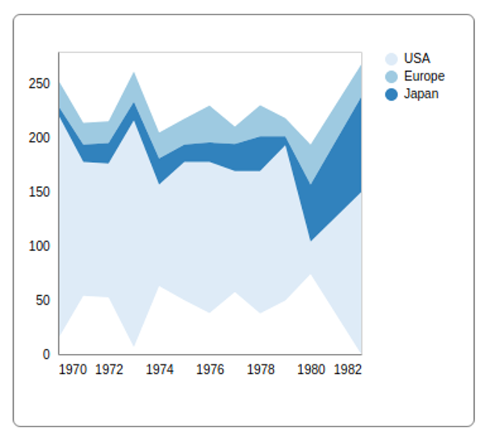
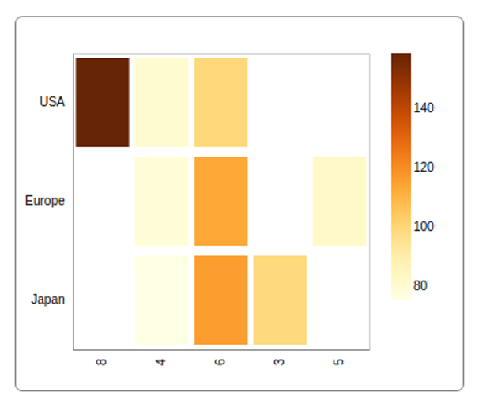

We exist to help you extract value from your data..
Storytelling is an incredibly powerful tool because it is how humans make sense of the world. Stories are an effective way to not only communicate information but also meaning. However, today’s challenge is the vast amount of information or data available.
The exponential growth in data is astounding:
The question is, how your business will use this data to create meaningful stories?
It is estimated that for a typical Fortune 1000 company, a mere 10% increase in data accessibility will result in more than $65 million additional net income. But just 0.5% of all data is currently being analysed.
Typical barriers to analysis are access to the right data and a dynamic, integrated tool that is easy to understand and easy to use.
Visual stories help us to make sense of raw data for better understanding and insight. It is also easier to share with co-workers and stakeholders.
We achieve this by creating solutions that help you:
- Leonardo Da Vinci
Get strategic insight into your business using Canvas. It is easy to learn and cost-effective. Visual stories help us to make sense of raw data for better understanding, better insights and better sharing.
As a canvas offers endless possibilities to a painter, so Canvas offers the same endless possibilities of storytelling through data visualisation to the knowledge worker.
This user-friendly software application puts these possibilities at your fingers tips without the need for data visualising specialists or infographic designers.
Canvas makes it easy to visualise data, ask questions, investigate, analyse and spot new patterns.
 Canvas helps you to:
Now you can build your own stories for greater insight and share it with others to power growth and business innovation.